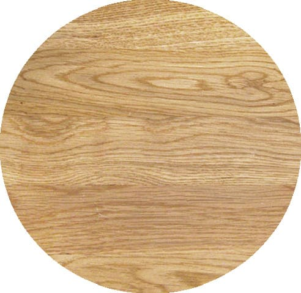
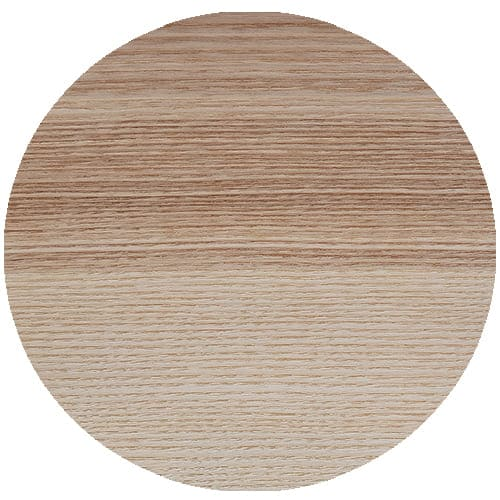
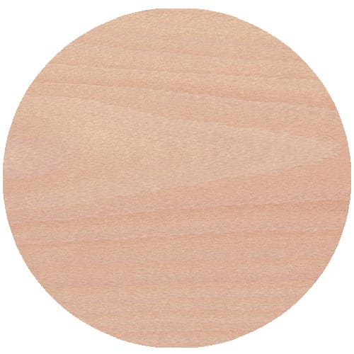
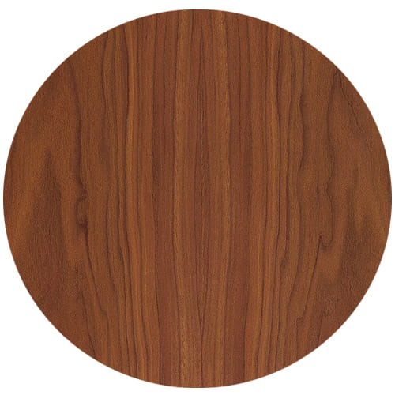
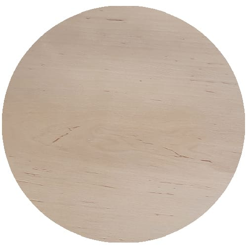
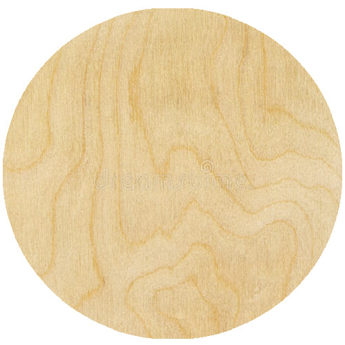

Producent schodów drewnianych z Kęt
Kleszcz Stolarstwo to rodzinna firma z ponad 60-letnim doświadczeniem w produkcji schodów drewnianych na wymiar. Każdy projekt realizujemy od pomysłu do montażu – bezpłatny pomiar, indywidualny projekt, własna produkcja i profesjonalny montaż.
Obsługujemy klientów na terenie całego Śląska i Małopolski: Katowice, Gliwice, Tychy, Zabrze, Rybnik, Bielsko-Biała, Kęty, Oświęcim, Wadowice i okolice. Realizujemy również zamówienia w całej Polsce oraz w Austrii.
Poznaj naszą firmę
Rodzaje schodów drewnianych
Projektujemy i wykonujemy wszystkie typy schodów drewnianych – dobieramy rozwiązanie do wielkości otworu, stylu wnętrza i budżetu.

Schody dywanowe
Schody dywanowe (samonośne) to najchętniej wybierany typ – lekkie, nowoczesne, optycznie otwierające przestrzeń. Stopnie mocowane są bezpośrednio do ściany lub belki nośnej, bez widocznej konstrukcji. Idealne do otwartych wnętrz w stylu loft i modern.

Schody zabiegowe
Schody zabiegowe doskonale sprawdzają się tam, gdzie liczy się każdy centymetr. Dzięki stopniom klinowym pięknie wpisują się w narożniki i skośne przestrzenie. Dostępne w wersjach z jednym lub dwoma zabiegami, z różnymi typami balustrad.

Schody kręcone
Schody kręcone to element, który sam w sobie staje się atrakcją wnętrza. Wymagają precyzji i doświadczenia – każdy stopień ma inny kształt i kąt. Wykonujemy je w drewnie litym, z balustradami drewnianymi, stalowymi lub szklanymi.

Schody wiszące
Schody wiszące zawieszone na cięgnach lub prętach stalowych sprawiają wrażenie, że unoszą się w powietrzu. To efektowne rozwiązanie dla wymagających inwestorów – łączymy tu precyzję stolarską z inżynierią stalową. Wyjątkowy efekt wizualny gwarantowany.
Gatunki drewna na schody
Do produkcji schodów używamy wyłącznie suszonych drewien litych z certyfikowanych tartaków. Każdy gatunek ma inne właściwości – pomagamy dobrać właściwy do stylu wnętrza i intensywności użytkowania.

Dąb
Twardy, odporny, klasyczny. Najchętniej wybierany gatunek.

Jesion
Sprężysty i twardy, piękny rysunek włókien. Naturalnie jasny.

Buk
Ekonomiczne i trwałe rozwiązanie. Dobrze przyjmuje bejce.

Orzech
Luksusowy, ciemny, elegancki. Dla wymagających inwestorów.

Olcha
Lekka, równomierna, łatwa w obróbce. Dobrze wygląda bejcowana.

Brzoza
Jasna i delikatna. Idealna do nowoczesnych, minimalistycznych wnętrz.
Jak pracujemy?
Od pierwszego kontaktu do gotowych schodów – w czterech krokach
Pomiar
Przyjeżdżamy na bezpłatny pomiar. Oceniamy otwór, konstrukcję, warunki montażu. Doradzimy optymalny typ schodów.
Projekt
Przygotowujemy indywidualny projekt z doborem materiałów, wykończenia i balustrady. Kosztorys bez ukrytych opłat.
Produkcja
Schody wykonujemy we własnym zakładzie stolarskim w Kętach. Kontrolujemy jakość na każdym etapie produkcji.
Montaż
Nasz zespół montuje schody terminowo i starannie. Zostawiamy po sobie porządek. Udzielamy gwarancji na wykonanie.
Nasze realizacje
Wybrane projekty schodów drewnianych wykonanych przez Kleszcz Stolarstwo


Zapytaj o wycenę schodów
Bezpłatny pomiar na terenie Śląska i Małopolski. Zadzwoń lub wyślij formularz – odpiszemy w ciągu 24 godzin.
+48 500 261 410 Formularz wyceny